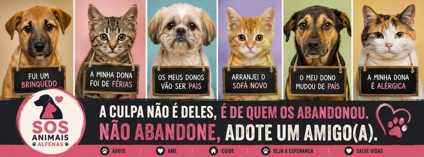

Uma ONG VIRTUAL! Junte-se a nós para transformar a realidade dos animais em nossa região.
Ao se inscrever como voluntário da ONG SOS Animais Alfenas, você se compromete a tratar todos os animais resgatados com respeito, zelar pela segurança dos mesmos e seguir as orientações da coordenação durante resgates e feiras.